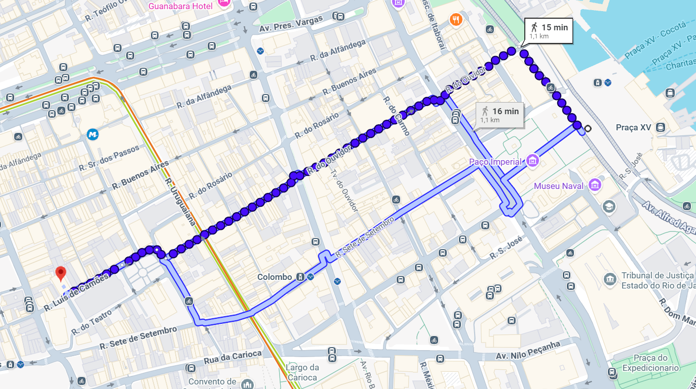

10:35

Você chegou à Rua Luís de Camões
O monumento está à sua esquerda.
Seu Progresso no Circuito
Parada 1 • Concluída
Praça XV e Paço Imperial
2

Você está no local
Real Gabinete Português
Sua proximidade destravou este monumento!
Parada 3 • A Caminho (A 450m)
Bloqueado